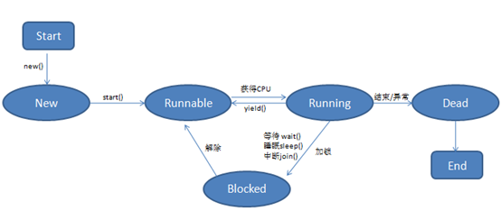
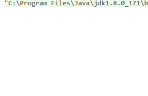

Thread 类的每一个实例都表示一个线程， 进程是操作系统级别的多任务，JVM 就是运行在一个进程中的。所以在Java 中我我们只考虑线程。进程有独立的内存，一个进程间的多个线程共享进程的内存进程中至少要有一个线程。
线程状态

New：当我们创建一个线程时，该线程并没有纳入线程调度，其处于一个new状态。
Runnable：当调用线程的start方法后，该线程纳入线程调度的控制，其处于一个可运行状态，等待分配时间片段以并发运行。
Running：当该线程被分配到了时间片段后其被CPU运行，这是该线程处于running状态。
Blocked：当线程在运行过程中可能会出现阻塞现象，比如等待用户输入信息等。但阻塞状态不是百分百出现的，具体要看代码中是否有相关需求。
Dead：当线程的任务全部运行完毕，或在运行过程中抛出了一个未捕获的异常，那么线程结束，等待GC回收
创建线程
线程有两种创建方式：
方式1：定义一个类并继承Thread，然后重写run方法，在其中书写线程任务逻辑：
1 | Thread t1 = new MyThread1(); |
输出：
1 | of course |
启动线程要调用start方法，不能直接调用run方法。start方法会将当前线程纳入到线程调度中，使其具有并发运行的能力。start方法很快会执行完毕。当start方法执行完毕后，当前线程的run方法会很快的被执行起来（只要获取到了cpu时间片）。但不能理解为调用start方法时run方法就执行了！
线程有几个不可控因素:
cpu分配时间片给哪个线程我们说了不算。
时间片长短也不可控。
线程调度会尽可能均匀的将时间片分配给多个线程。
第一种创建线程的方式存在两个不足：
由于java是单继承的，这就导致我们若继承了Thread类就无法再继承其他类，这在写项目时会遇到很大问题；
由于我们定义线程的同时重写run方法来定义线程要执行的任务，这就导致线程与任务有一个强耦合关系，线程的重用性变得非常局限。
方式2：定义一个类并实现Runnable接口然后在创建线程的同时将任务指定。因为是实现Runnable接口，所以不影响其继承其他类：
1 | Thread t1 = new Thread(() -> { |
线程相关API
获取当前线程：
1 | Thread current = Thread.currentThread(); // Thread[main,5,main] |
获取当前线程ID：
1 | Thread current = Thread.currentThread(); |
获取当前线程名字：
1 | Thread current = Thread.currentThread(); |
获取当前线程优先级：
1 | Thread current = Thread.currentThread(); |
判断当前线程是否还活着：
1 | Thread current = Thread.currentThread(); |
判断当前线程是否为守护线程：
1 | Thread current = Thread.currentThread(); |
判断当前线程是否被中断：
1 | Thread current = Thread.currentThread(); |
线程的优先级
线程优先级分为10个等级，1最低，5默认，10最高。线程提供了3个常量：
MIN_PRIORITY：1 对应最低优先级；
MAX_PRIORITY： 10 对应最高优先级；
NORM_PRIORITY：5 默认优先级。
线程阻塞
Thread提供了一个静态方法: sleep，该方法会阻塞运行当前方法的线程指定毫秒。当超时后，线程会自动回到Runnable状态，等待再次分配时间片运行：
1 | System.out.println("程序开始了"); |
守护线程
后台线程，又叫做守护线程，当一个进程中的所有前台线程都结束了，进程就会结束，无论进程中的其他后台线程是否还在运行，都要被强制中断：
1 | Thread front = new Thread(() -> { |
输出如下：
1 | 前台线程结束，我就gg |
yield
该方法用于使当前线程主动让出当次CPU时间片回到Runnable状态，等待分配时间片。
join
允许当前线程在另一个线程上等待，直到另一个线程结束工作。通常是用来协调两个线程工作使用：
1 | private static boolean isFinish = false; |

synchroinzed
多个线程并发读写同一个临界资源时候会发生“线程并发安全问题”
常见的临界资源:
多线程共享实例变量；
多线程共享静态公共变量。
若想解决线程安全问题，需要将异步的操作变为同步操作。 何为同步？那么我们来对比看一下什么是同步什么异步：
所谓异步操作是指多线程并发的操作，相当于各干各的。
所谓同步操作是指有先后顺序的操作，相当于你干完我再干。
而java中有一个关键字名为：synchronized，该关键字是同步锁，用于将某段代码变为同步操作，从而解决线程并发安全问题。使用锁需要注意两个方面：
选择合适的锁对象：使用synchroinzed需要对一个锁对象上锁以保证线程同步。那么这个锁对象应当注意多个需要同步的线程在访问该同步块时，看到的应该是同一个锁对象引用。否则达不到同步效果。 通常我们会使用this来作为锁对象。
选择合适的锁范围：在使用同步块时，应当尽量在允许的情况下减少同步范围，以提高并发的执行效率。
synchronized关键字有两个用法:
修饰方法，这样的话，该方法就称为”同步方法”，多个线程就不能同时进入到方法内部去执行。可以避免由于线程切换不确定，导致的逻辑错误。
synchronized块，可以将某段代码片段括起来，多个线程不能同时执行里面的代码。
1 | public static void main(String[] args) { |
如果不加synchronized关键字，可能beans为负数了，线程还在执行，成了死循环。
synchronized块的例子：
1 | public static void main(String[] args) { |
此时，“正在试衣服”这个代码块一次只能一个线程执行。
wait¬ify
Object类中定义了两个方法wait()和notify()。它们也可以实现协调线程之间同步工作的方法。当一个线程调用了某个对象的wait方法时，这个线程就进入阻塞状态，直到这个对象的notify方法被调用，这个线程才会解除wait阻塞，继续向下执行代码。
若多个线程在同一个对象上调用wait方法进入阻塞状态后，那么当该对象的notify方法被调用时，会随机解除一个线程的wait阻塞，这个不可控。若希望一次性将所有线程的wait阻塞解除，可以调用notifyAll方法。
1 | private static boolean isFinish; |
线程池
当我们的逻辑中出现了会频繁创建线程的情况时，就要考虑使用线程池来管理线程。这可以解决创建过多线程导致的系统威胁。
线程池主要解决两个问题：
控制线程数量；
重用线程。
1 | //创建一个固定大小的线程池 |
1 | Thread[pool-1-thread-2,5,main]正在运行任务! |
此时同时只能有三个线程数量。